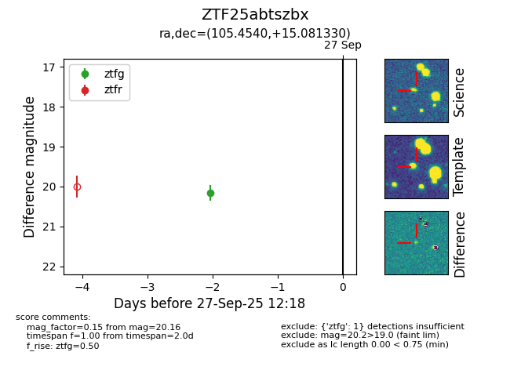

FINK: ZTF25abtszbx
Lasair: ZTF25abtszbx
ALeRCE: ZTF25abtszbx
ZTF25abtszbx (ztf,fink)
equatorial (ra, dec) = (105.4540,+15.08133)
galactic (l, b) = (200.5567,+9.06423)

last ztfg=20.16
1 ztfg detections